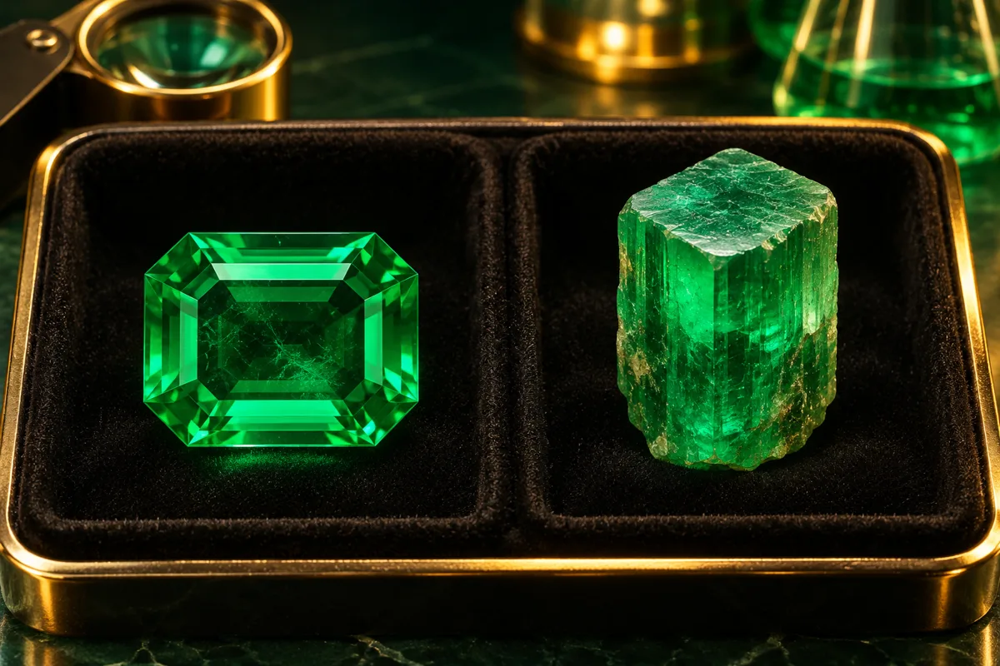

01
Diferenciar materiales
Diferenciar gemas naturales, sintéticas, tratadas e imitaciones.
Reconocimiento y diferenciación de materiales gemológicos naturales, sintéticos, tratados e imitaciones mediante criterios de observación y análisis.
Registro personal de lectura en este navegador; no equivale a una calificación ni se sincroniza con Classroom.

El Módulo 05 aborda una clasificación fundamental dentro de la gemología: la diferenciación entre gemas naturales, sintéticas, tratadas e imitaciones.
La apariencia externa de una gema no siempre permite determinar su origen o naturaleza. Por esta razón, el análisis gemológico requiere la aplicación de criterios sistemáticos y, cuando sea necesario, el uso de instrumentos especializados.
El estudio de estas categorías permite comprender las diferencias existentes entre los materiales y fortalece la capacidad del estudiante para realizar procesos de identificación y análisis de manera responsable.
Una característica visual similar no significa necesariamente que dos materiales tengan el mismo origen. La identificación requiere analizar diferentes evidencias gemológicas.
Al finalizar este módulo, el estudiante podrá diferenciar conceptualmente las principales categorías de materiales gemológicos y reconocer criterios básicos para su identificación.
Diferenciar gemas naturales, sintéticas, tratadas e imitaciones.
Comprender las diferencias fundamentales relacionadas con el origen de los materiales.
Identificar la importancia de conocer posibles tratamientos aplicados a una gema.
Relacionar las observaciones gemológicas con la clasificación correspondiente.
El contenido se organiza en cuatro categorías principales de materiales que deben ser comprendidas y diferenciadas durante el proceso de formación gemológica.
Materiales de origen natural utilizados como gemas y sus características de identificación.
Materiales producidos artificialmente que presentan características relacionadas con determinadas gemas naturales.
Materiales naturales o gemológicos que han sido sometidos a procesos destinados a modificar determinadas características.
Materiales utilizados para reproducir parcial o visualmente la apariencia de una gema.
Observación y análisis de características que permiten establecer diferencias entre los materiales.
La siguiente clasificación proporciona una referencia conceptual para diferenciar las cuatro categorías abordadas en este módulo.
Material gemológico formado mediante procesos naturales y que no corresponde a una producción sintética.
Material producido artificialmente con características correspondientes a una determinada gema.
Material que ha recibido un tratamiento destinado a modificar o mejorar alguna de sus características.
Material empleado para imitar visualmente la apariencia de otra gema.
Conceptos esenciales, ejemplo aplicado, actividad de estudio, preguntas con respuestas y referencias de consulta.
Material académico correspondiente al Módulo 05 del Curso de Gemología.
El material académico debe configurarse en Google Drive con permisos de visualización para los estudiantes.
El estudiante deberá analizar diferentes casos o ejemplos y clasificarlos de acuerdo con las categorías estudiadas en el módulo. La actividad permitirá reforzar la capacidad de diferenciación conceptual.
Consultar actividades en Classroom ↗Tres preguntas, una sola respuesta por pregunta. Al finalizar se muestran la puntuación y las explicaciones. Se permite repetir la evaluación.
Evaluación de práctica en esta página. El resultado no se guarda ni se envía a Classroom. Las preguntas de la guía PDF se conservan.
La lectura puede marcarse al terminar la consulta del contenido. Esta marca personal no sustituye las actividades ni la evaluación docente.